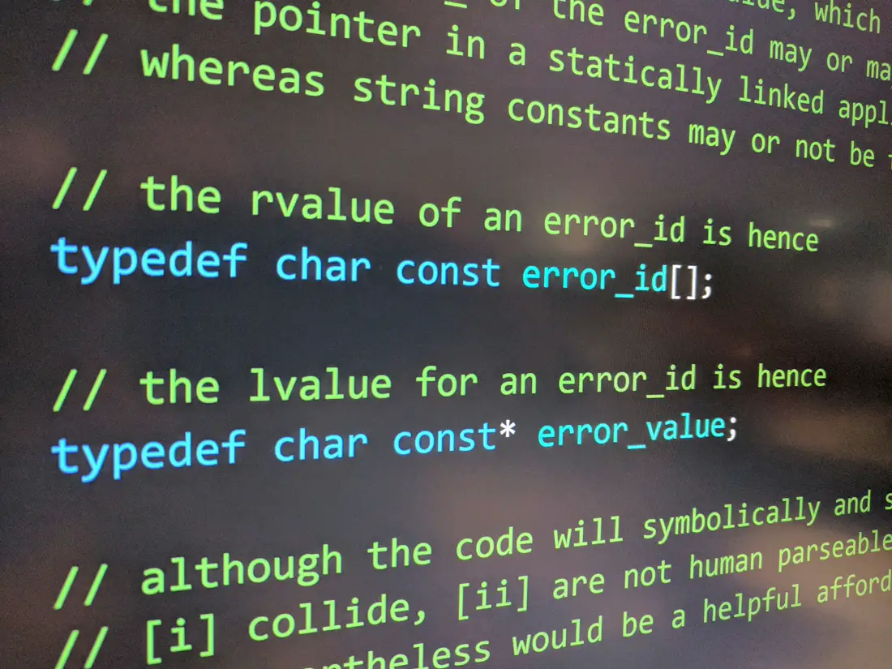
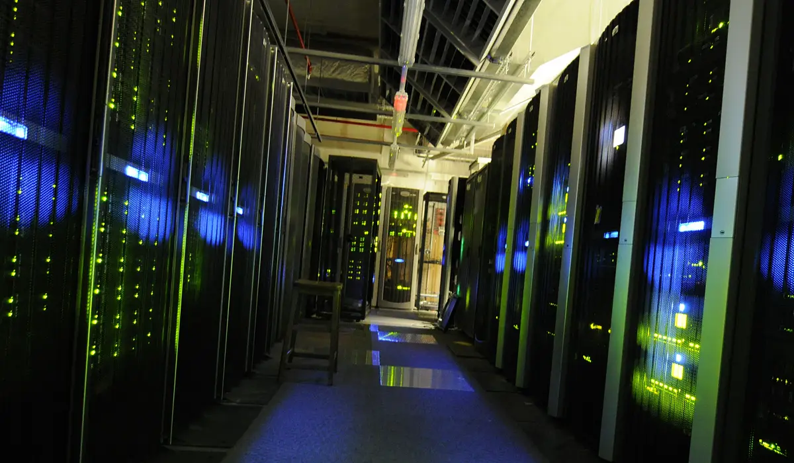
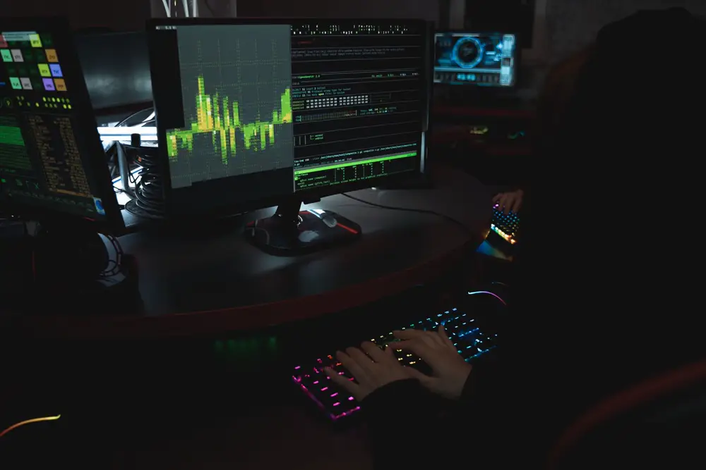

0 of 4 objectives
Hat colours, and red team versus blue team
Hat colours describe permission. Red team and blue team describe the two jobs in a planned exercise. People sometimes say “red hat” or “blue hat” for those jobs. The usual names are red team and blue team.
-
No permission
Black hat
Breaks into a system without permission, usually to steal, damage, or sell access. That is a crime. This lab never asks you to do it. The photograph above is a person at a laptop. It is not a portrait of this role.
-
Written permission
White hat
Tests security with written permission and reports what they find so it can be fixed. This workstation is that kind of exercise: a fictional target, a fixed set of commands, and a fix you can read.
-
Unclear permission
Grey hat
Looks for a weakness without a clear invitation, then tells the owner. Even a helpful break-in can be illegal. Stay inside this lab. The only target in scope is 10.10.8.20.
-
The attack practice
Red team
A group that pretends to be an attacker, with permission, to see if the defences hold. In this demo the red-team step is small: find the service that should not be open.
-
The defence
Blue team
Watches, detects, and closes the gap. After you name the exposed service, Defend is the blue-team step: turn anonymous login off, or move the share to a safer method.
Where this work happens




The training server in this lesson is fictional. These photographs show real rooms, screens, and people at work. They are not pictures of the lab.
Addresses, ports, and services
Every device on this lab network has an IP address. That is the number other devices use to reach it. Your workstation is 10.10.8.15. The training server is 10.10.8.20. The /24 means the first three numbers, 10.10.8, name the network, and the last number picks the device. Addresses that start with 10 are private. They are used inside a lab or an office. 10.10.8.20 is not a public internet address. It exists only in this story.
A port is a numbered door on that address. One address can have many doors. Port 22 is the usual door for SSH, a remote login. Port 80 is the usual door for a website. Port 21 is the usual door for FTP, an old way to move files.
A service is the program listening behind a door. An open port only tells you that some program answered. It does not tell you whether that program should be answering. SSH that demands a key is a normal locked door. A file service that lets anyone in with the name anonymous is an open cupboard.
| Port | Usual service | What to notice |
|---|---|---|
| 21 | FTP | Does it ask for a personal login? |
| 22 | SSH | A key request is a normal lock. |
| 80 | HTTP | The lab portal is meant to be readable. |
Find which door on 10.10.8.20 is the open cupboard, name it in the lab brief, and then read the fix. You will not change a real server. The terminal only prints prepared answers, and the network model repeats the same facts in a picture.
Photographers, source pages, and licences are listed in CREDITS.md. Each picture was resized to WebP for this page.
Target environment
One service on the target is left open on purpose. The network model uses the same status as this list.
- Lab
- Nyansa training LAN, fictional
- Your workstation
- ws-01 · 10.10.8.15
- Training target
- lab-server · 10.10.8.20
- Network
- 10.10.8.0/24, a private range
- Scope
- Only 10.10.8.20